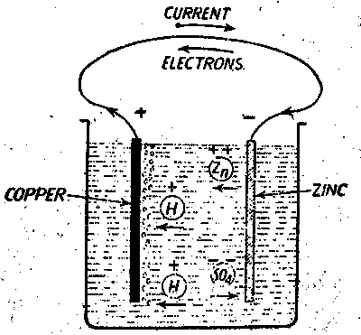
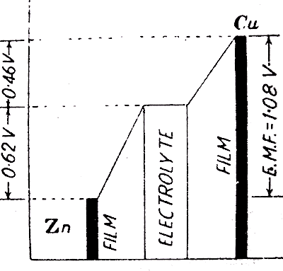

A simple voltaic cell is made by immersing one zinc plate and one copper plate inside a dilute sulfuric acid solution. As shown in the figure, if the copper plate and zinc plate are connected externally to the solution by a conductor, an electric current starts flowing from copper plate to zinc plate through the conductor. That means there is some electrical potential difference that gets developed between the copper plate and zinc plate and as the electric current flows from copper to zinc, it is obvious that the copper plate becomes positively charged and zinc plate becomes negatively charged.
Working Principle of Voltaic Cell
The working principle of voltaic cell depends upon the principle that, whenever two dissimilar metals are immersed inside an electrolyte solution, the more reactive metal will have a tendency to dissolve in the electrolyte as positive metal ions, leaving electrons behind on the metal plate. This phenomenon makes the more reactive metal plate negatively charged.

Less reactive metal will attract positive ions present in the electrolyte, and hence these positive ions are deposited on the plate and make the plate positively charged. Here in this case of simple voltaic cell, the zinc comes out in the sulfuric acid solution as positive ion and then reacts with negative SO4 − − ion of the solution and forms zinc sulfate (ZnSO4). As the copper is less reactive metal, the positive hydrogen ions of the sulfuric acid solution have a tendency to get deposited on the copper plate. More and more zinc ions coming out in the solution means, more and more number of electrons they leave in the zinc plate. These electrons then pass through the external conductor connected between zinc and copper plates. On reaching on the copper plate, these electrons then combine with the hydrogen atoms deposited on the plate and form neutral hydrogen atoms. These atoms then combine in pairs to form molecules of hydrogen which lastly come up along the copper plate in form of hydrogen bubbles. The chemical action taking place inside the voltaic cell is as follows,
However this action stops when the contact potential between Zn and dilute sulfuric acid reaches the value of 0.62 Volt, zinc being at lower potential with respect of the solution film adjacent to it as shown in the figure below.
Similarly, when Cu plate is placed in contact with the electrolyte, then the positive hydrogen ions in the solution have a tendency to get deposited on it until its potential rises nearly to 0.46 V above that solution.
Hence the electrical potential difference developed in a voltaic cell is 0.62 − (− 0.46) = 1.08 Volts.

In a simple voltaic cell there are mainly two drawbacks, referred as Polarization and local action.
Polarization
It is observed that in this cell, the electric current gradually reduced and after certain time of its operation, the electric current may cease altogether. This is decrease of electric current due to the deposition of hydrogen on the copper plate. Although the hydrogen comes out from the cell in form of bubbles, but still there is a formation of thin layer on the plate surface. This layer acts as electrical insulation, hence increase the internal electrical resistance of the cell. Because of this insulated layer, further hydrogen ions cannot get electrons from copper plate and get deposited in ion form. This layer of positive hydrogen ions on the copper plate exerts a repulsive force on other hydrogen ions which are approaching the copper plate. Hence electric current is reduced. This phenomenon is known as polarization.
Local Action
It is found that even when the voltaic cell is not supplying any electric current, zinc continuously dissolves in the electrolyte. This is due to the fact that some traces of impurities like iron and lead in commercial zinc form tiny local cells which are short circuited by the main body of zinc. The action of these parasitic cells cannot be controlled so that there is some wastage of zinc. This phenomenon is known as local action.
 by
by